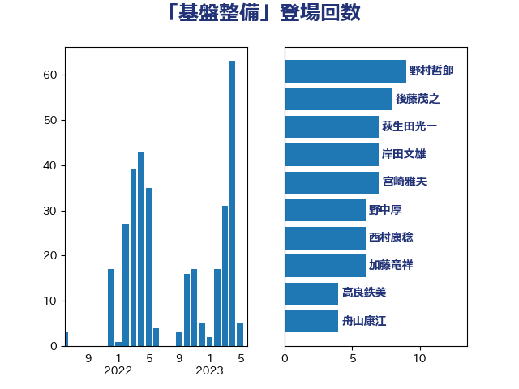

単語「基盤整備」

| 野村哲郎 | 自由民主党 | 9 回 |
| 後藤茂之 | 自由民主党 | 8 回 |
| 萩生田光一 | 自由民主党 | 7 回 |
| 岸田文雄 | 自由民主党 | 7 回 |
| 宮崎雅夫 | 自由民主党 | 7 回 |
| 野中厚 | 自由民主党 | 6 回 |
| 西村康稔 | 自由民主党 | 6 回 |
| 加藤竜祥 | 自由民主党 | 6 回 |
| 高良鉄美 | 無所属 | 4 回 |
| 舟山康江 | 国民民主党 | 4 回 |
| 福田昭夫 | 立憲民主党 | 3 回 |
| 河野太郎 | 自由民主党 | 3 回 |
| 川田龍平 | 立憲民主党 | 3 回 |
| 岡田直樹 | 自由民主党 | 3 回 |
| 加藤勝信 | 自由民主党 | 3 回 |
| 丸川珠代 | 自由民主党 | 3 回 |
| 中野英幸 | 自由民主党 | 3 回 |
| 齋藤健 | 自由民主党 | 2 回 |
| 門山宏哲 | 自由民主党 | 2 回 |
| 鈴木俊一 | 自由民主党 | 2 回 |
| 重徳和彦 | 立憲民主党 | 2 回 |
| 赤池誠章 | 自由民主党 | 2 回 |
| 葉梨康弘 | 自由民主党 | 2 回 |
| 芳賀道也 | 国民民主党 | 2 回 |
| 緑川貴士 | 立憲民主党 | 2 回 |
| 空本誠喜 | 日本維新の会 | 2 回 |
| 田畑裕明 | 自由民主党 | 2 回 |
| 田村貴昭 | 日本共産党 | 2 回 |
| 田中健 | 国民民主党 | 2 回 |
| 猪口邦子 | 自由民主党 | 2 回 |
| 池畑浩太朗 | 日本維新の会 | 2 回 |
| 橘慶一郎 | 自由民主党 | 2 回 |
| 本田顕子 | 自由民主党 | 2 回 |
| 末松義規 | 立憲民主党 | 2 回 |
| 平沼正二郎 | 自由民主党 | 2 回 |
| 山田勝彦 | 立憲民主党 | 2 回 |
| 山田俊男 | 自由民主党 | 2 回 |
| 小倉將信 | 自由民主党 | 2 回 |
| 寺田稔 | 自由民主党 | 2 回 |
| 古川禎久 | 自由民主党 | 2 回 |
| 井上貴博 | 自由民主党 | 2 回 |
| 中村裕之 | 自由民主党 | 2 回 |
| 下野六太 | 公明党 | 2 回 |
| 高橋千鶴子 | 日本共産党 | 1 回 |
| 高橋光男 | 公明党 | 1 回 |
| 高市早苗 | 自由民主党 | 1 回 |
| 長峯誠 | 自由民主党 | 1 回 |
| 長友慎治 | 国民民主党 | 1 回 |
| 金子恭之 | 自由民主党 | 1 回 |
| 野間健 | 立憲民主党 | 1 回 |
| 野田聖子 | 自由民主党 | 1 回 |
| 近藤和也 | 立憲民主党 | 1 回 |
| 輿水恵一 | 公明党 | 1 回 |
| 谷合正明 | 公明党 | 1 回 |
| 西銘恒三郎 | 自由民主党 | 1 回 |
| 西村智奈美 | 立憲民主党 | 1 回 |
| 西岡秀子 | 国民民主党 | 1 回 |
| 藤井比早之 | 自由民主党 | 1 回 |
| 若松謙維 | 公明党 | 1 回 |
| 若宮健嗣 | 自由民主党 | 1 回 |
| 稲津久 | 公明党 | 1 回 |
| 福重隆浩 | 公明党 | 1 回 |
| 神谷裕 | 立憲民主党 | 1 回 |
| 畦元将吾 | 自由民主党 | 1 回 |
| 田村まみ | 国民民主党 | 1 回 |
| 牧山ひろえ | 立憲民主党 | 1 回 |
| 漆間譲司 | 日本維新の会 | 1 回 |
| 渡辺創 | 立憲民主党 | 1 回 |
| 泉健太 | 立憲民主党 | 1 回 |
| 梶山弘志 | 自由民主党 | 1 回 |
| 東国幹 | 自由民主党 | 1 回 |
| 末次精一 | 立憲民主党 | 1 回 |
| 星北斗 | 自由民主党 | 1 回 |
| 日下正喜 | 公明党 | 1 回 |
| 平木大作 | 公明党 | 1 回 |
| 岡本三成 | 公明党 | 1 回 |
| 山下芳生 | 日本共産党 | 1 回 |
| 尾身朝子 | 自由民主党 | 1 回 |
| 小林鷹之 | 自由民主党 | 1 回 |
| 安江伸夫 | 公明党 | 1 回 |
| 太田房江 | 自由民主党 | 1 回 |
| 大島九州男 | れいわ新選組 | 1 回 |
| 堀井巌 | 自由民主党 | 1 回 |
| 坂本祐之輔 | 立憲民主党 | 1 回 |
| 和田義明 | 自由民主党 | 1 回 |
| 古屋範子 | 公明党 | 1 回 |
| 前原誠司 | 国民民主党 | 1 回 |
| 住吉寛紀 | 日本維新の会 | 1 回 |
| 伊波洋一 | 無所属 | 1 回 |
| 伊佐進一 | 公明党 | 1 回 |
| 今井絵理子 | 自由民主党 | 1 回 |
| 五十嵐清 | 自由民主党 | 1 回 |
| 串田誠一 | 日本維新の会 | 1 回 |
| 中西祐介 | 自由民主党 | 1 回 |
| 中川郁子 | 自由民主党 | 1 回 |
| 中島克仁 | 立憲民主党 | 1 回 |
| 中司宏 | 日本維新の会 | 1 回 |
| 三浦信祐 | 公明党 | 1 回 |